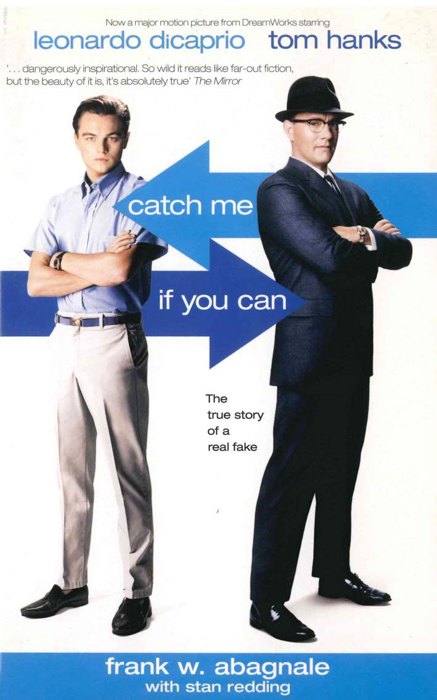

List of Movies
Catch Me if You Can
Frank Abagnale, the sixteen year old the FBI hunted half way across the world. Frank was a regular teenager until his parents divorce, he would then forage his birth certificate and practically invent the idea of Bank Fraud, stealing tens of millions of dollars from the US Government. By the time Frank was seventeen he had become a pilot, doctor and lawyer without graduating from High School. Frank, played by Leonardo DiCaprio, quickly becomes one of the most wanted criminals in the US and FBI Agent Carl Hanratty, played by Tom Hanks, makes it his prime mission to bring Frank to justice. Directed by Steven Spielberg, released on Christmas of 2002, this movie racked in over 350 Million Dollars. Great Actors, great production and a large budget this movie proves to be one of my favorite biographical crime movies. 10/10